항공전자정비기능사 (2001-10-14 기출문제)
1과목: 임의 구분
1. 맥동률이 가장 적은 정류기는?
- 단상 전파정류기
- 3상 전파정류기
- 단상 반파정류기
- 3상 반파정류기
(정답률: 알수없음)

2. VHF와 UHF 대의 주파수 일부를 90㎐와 150㎐로 변조한 신호를 사용하는 SYSTEM은?
- G/S
- ILS
- LOC
- M/B
(정답률: 알수없음)
3. 인덕턴스의 측정에 사용되는 브리지의 종류가 아닌 것은?
- 맥스웰 브리지
- 헤이 브리지
- 헤비사이드 브리지
- 윈 브리지
(정답률: 알수없음)
4. 계산기 등의 논리회로의 결과를 나타내기 위해 많이 사용되는 LED에 관한 설명으로 옳지 않은 것은?
- LED는 반도체 다이오드이다.
- 역바이어스 되었을 때 빛을 낸다.
- 반도체 접합에서 정공과 전자가 재결합할 때 빛을 낸다.
- 단자간에 걸리는 전압은 1.6V를 초과해서는 안된다.
(정답률: 알수없음)
5. 10[Ω]과 15[Ω]의 저항을 병렬로 하고 50[A]의 전류를 흘렸을 때, 저항 15[Ω]에 흐르는 전류는 얼마인가?
- 10[A]
- 20[A]
- 30[A]
- 40[A]
(정답률: 알수없음)
6. 로컬라이저(Localizer)에 사용되는 주파수 범위는?
- 2[MHz] ∼ 29.999[MHz]
- 108[MHz] ∼ 112[MHz]
- 329[MHz] ∼ 335[MHz]
- C 또는 X band
(정답률: 알수없음)
7. 각종 무선기기의 주파수 특성이나 수신기의 중간주파 증폭기의 특성을 관측할 때 사용되는 발진기는?
- 이상 발진기
- 음차 발진기
- 비트 발진기
- 소인 발진기
(정답률: 알수없음)
8. 자동추력제어 장치에 있어서 추력은 무엇에 의하여 조절되는가?
- 공기량
- 연료량
- 오일량
- 배기가스
(정답률: 알수없음)
9. 전파 고도계가 지시하는 고도는?
- 기압
- 상대
- 여압
- 절대
(정답률: 알수없음)
10. "Yaw Damper System"의 기능은?
- 주기적인 Yaw 진동을 보상하기 위해 Rudder 위치를 정한다.
- 주기적인 Yaw 진동을 보상하기 위해 Elevator 위치를 정한다.
- 주기적인 Yaw 진동을 보상하기 위해 Aileron 위치를 정한다.
- 주기적인 Yaw 진동을 보상하기 위해 Stabilizer 위치를 정한다.
(정답률: 알수없음)
11. 어떤 코일에 직류 10[A]가 흐를 때, 축적된 에너지가 50[J]이라면, 이 코일의 자기 인덕턴스는 몇[H]인가?
- 0.5
- 1.0
- 1.5
- 2.0
(정답률: 알수없음)
12. 마아커비이컨 장치의 변조주파수에 해당되지 않는 것은?
- 400 ㎐
- 1000 ㎐
- 1300 ㎐
- 3000 ㎐
(정답률: 알수없음)
13. 비행중인 항공기의 각종 자료를 수집 기록하여 이것을 기상 및 지상에서 처리 분석하여 항공기의 효율적인 운용을 하는 장치는?
- 비행기록집적장치(AIDS)
- 비행자료기록장치(FDR)
- 조종실 음성기록장치(CVR)
- 관성항법장치(INS)
(정답률: 알수없음)
14. 108 - 117.95[㎒]대의 전파를 사용하는 지상설비의 항법 전자장치는?
- 초단파 전방향 표지기(VOR)
- 전파 고도계
- 기상 레이더(W/R)
- 관성 항법장치(INS)
(정답률: 알수없음)
15. 지상 10,000ft의 상공에서 전파의 최대 가시거리는? (단, 반사파는 없는 것으로 한다.)
- 약 128마일
- 약 100마일
- 약 98마일
- 약 50마일
(정답률: 알수없음)
16. 그림과 같은 회로에서 D1과 D2가 모두 차단상태가 되는 조건은? (단, D1과 D2의 항복전압은 Vz이다.)
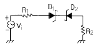
- -Vz · vi = Vz
- vi = Vz
- -Vz ＜ vi ＜ Vz
- -Vz ＞ vi ＞ Vz
(정답률: 알수없음)
17. 디지털 신호를 아날로그 신호로 바꾸는 것을 무엇이라 하는가?
- A/D 변환
- 디지털 신호
- 아날로그 신호
- D/A 변환
(정답률: 알수없음)
18. 히스테리시스 곡선의 종축과 만나는 점 B2를 무엇이라고 하는가?
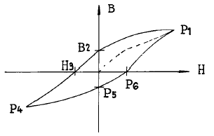
- 잔류자기
- 보자력
- 포화점
- 원점
(정답률: 알수없음)
19. 회로에서 리플함유율이 2%이다. Vd= 250V일 때 △V는 몇 V 인가? (단, △V는 실효값임)
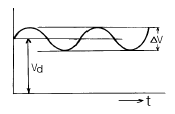
- 2
- 5
- 7.5
- 12.5
(정답률: 알수없음)
20. 300[V]를 가하여 5[A]가 흐르는 직류 전동기를 3시간 동안 사용할 때, 전력량은 얼마인가?
- 1.5[Kwh]
- 4.5[Kwh]
- 90[Kwh]
- 150[Kwh]
(정답률: 알수없음)
2과목: 임의 구분
21. 전동기에 200[V] 전압을 가하여 50[W]의 전력을 소비했을 때, 이 전동기의 저항은?
- 4[Ω]
- 10[Ω]
- 50[Ω]
- 800[Ω]
(정답률: 알수없음)
22. 그림과 같은 특성곡선은 어떤 것에 대한 특성곡선인가?
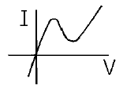
- UＪT
- SCR
- 터널 다이오드
- 바랙터 다이오드
(정답률: 알수없음)
23. 기록장치와 경고장치 중 항공기 시스템에 대하여 조종사가 즉각 그 사태를 인식하지 않으면 안되는 이상이 발생되었을 경우는?
- 경고
- 주의
- 충고
- 조언
(정답률: 알수없음)
24. 일반적으로 기상 레이더에 사용되고 있는 주파수대는?
- P 밴드
- K 밴드
- O 밴드
- X 밴드
(정답률: 알수없음)
25. 반결합발진기가 발진을 계속하기 위한 입력과 출력의 위상차 조건은 몇 도 인가?
- 0
- 90
- 180
- 270
(정답률: 알수없음)
26. 인덕턴스 L[H]과 R[Ω]이 직렬로 연결되어 있을 때, 시상수는?
- R·L
- L/R
- R/L
- 1/(R·L)
(정답률: 알수없음)
27. 비행 data 기록장치(FDR)에 기록되는 data가 아닌 것은?
- 고도
- 대기속도
- 기수방위
- 비행예정(schedule)
(정답률: 알수없음)
28. 논리회로의 출력 Y에 대한 논리식으로 옳은 것은?
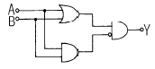
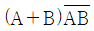
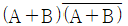
- (A+B)AB
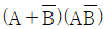
(정답률: 알수없음)
29. 다음 그림에서 합성 정전 용량은?
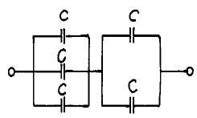
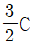
- 5C
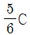
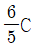
(정답률: 알수없음)
30. TACAN 안테나의 지향 특성이다. 합성 패턴은?
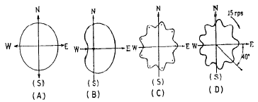
- A
- B
- C
- D
(정답률: 알수없음)
31. 자동조종장치의 기능이 아닌 것은?
- 항공기 자세변화에 대한 안정유지
- 비행방향유지
- 비행자세유지
- 일정추력유지
(정답률: 알수없음)
32. 임피던스 브리지로 측정할 수 없는 것은?
- 저항값
- 전류
- 용량값
- 코일의 Q
(정답률: 알수없음)
33. 기상 레이더로서 식별할 수 없는 것은?
- 구름
- 지형지물
- 해안
- 바닷물의 염분농도
(정답률: 알수없음)
34. 자동 비행 장치(AFCS)의 작동상 분류를 할 때 유도작용(誘導作用)이 의미하는 것은?
- 기체(機體)가 기준자세로 부터 벗어났을 경우 그 기체를 다시 원상으로 하는 작용이다.
- 항공기를 상승,하강,선회의 작용을 하게하는 것이다.
- 항공기를 자동으로 어느 정해진 항로를 따라 비행시키는 작용이다.
- 항공기 기관(ENGINE)의 추력을 자동으로 제어하는 작용을 말한다.
(정답률: 알수없음)
35. 기준레벨보다 높은 부분을 평탄하게 하는 회로는?
- 게이트회로
- 미분회로
- 적분회로
- 리미터회로
(정답률: 알수없음)
36. 다음 중 수직 안테나의 지향 특성은?
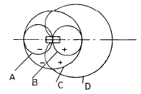
- A
- B
- C
- D
(정답률: 알수없음)
37. 기전력 E[V], 내부저항 r[Ω]의 같은 전지 N개를 병렬로 접속한 경우, 부하저항 R에 흐르는 전류 I[A]는?
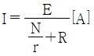
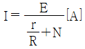
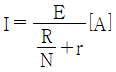
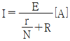
(정답률: 알수없음)
38. 궤환증폭기에서 궤환을 시켰을 때의 증폭도
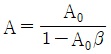
라면 이 식에서 |1-A0β| ＞ 1일 때 나타나는 특성 중 틀린 것은?- 주파수 특성이 양호하다.
- 증폭기의 잡음이 감소된다.
- 증폭도가 감소된다.
- 출력 임피던스가 커진다.
(정답률: 알수없음)
39. 교류 검류계로서 주로 상용주파수에 사용되고 있는 것은?
- 충격형 검류계
- 진동형 검류계
- 지침형 검류계
- 반조형 검류계
(정답률: 알수없음)
40. 항공기 음성장치의 해당 기능계통이 아닌 것은?
- 음성신호 선택 제어계통
- 기내 통화계통
- 풍향 정보계통
- 기내 확성 방송계통
(정답률: 알수없음)
3과목: 임의 구분
41. 변조도 m ＞1일 때 나타나는 현상은?
- 음성파가 찌그러진다.
- 음성이 줄어든다.
- 신호파 전력이 적어진다.
- 신호파 전력이 커진다.
(정답률: 알수없음)
42. 이상적인 연산증폭기가 갖추어야 할 조건은?
- 오프셋이 1 이어야 한다.
- 전압이득이 0 이어야 한다.
- 입력임피던스가 1 또는 0 이어야 한다.
- 출력임피던스가 0 이어야 한다.
(정답률: 알수없음)
43. 그림과 같은 파형이 오실로스코프에 나타났을 때 위상은 어떻게 되는가?
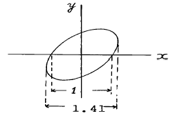
- 동위상
- 45°
- 90°
- 180°
(정답률: 알수없음)
44. 2진수 1100을 10진수로 바꾸면?
- 10
- 11
- 12
- 13
(정답률: 알수없음)
45. 디지털 전압계(DVM)의 회로방식 중 합당하지 않는 것은?
- 카운터 회로
- 비교 회로
- 함수 발생 회로
- 증폭 회로
(정답률: 알수없음)
46. 정밀급으로 많이 사용되며 교류, 직류에 사용 하여도 동일 지시를 하지만 외부 자계의 영향을 받기 쉬운 계기는?
- 가동철편형
- 전류력계형
- 정전형
- 가동코일형
(정답률: 알수없음)
47. 히스테리시스 곡선의 횡축과 종축은 각각 무엇을 나타내는가?
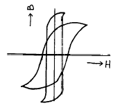
- 자장의 세기, 자속밀도
- 자속밀도, 투자율
- 자화의 세기, 자장의 세기
- 자장의 세기, 투자율
(정답률: 알수없음)
48. 열전쌍의 재료로 요구되는 사항이 아닌 것은?
- 저항변동이 커야한다.
- 열기전력이 커야한다.
- 고온에서도 안정한 금속이어야 한다.
- 저항이 일정해야 한다.
(정답률: 알수없음)
49. SURFACE SERVO SYSTEM에 신호를 보내주는 CHANNEL은?
- ADi
- AUTO PiLOT
- FLiGHT DiRECTOR
- FMA
(정답률: 알수없음)
50. 미분회로로 사용할 수 있는 회로는?
- 대역통과필터
- 대역저지필터
- 고역통과필터
- 저역통과필터
(정답률: 알수없음)
51. ADC(Air Data Computer)장치에서 얻을 수 있는 자료가 아닌 것은?
- 마하수(Mach NO)
- 대기속도(對氣速度 : TAS)
- 고도(Altitude)
- 대지속도(對地速度 : Ground speed)
(정답률: 알수없음)
52. 항공통신기에서 신호 입력이 없을때 임펄스성 잡음에 의해 동작하여 저주파 증폭부의 동작을 정지시켜주는 것은?
- 공동 공진회로
- 주파수 합성회로
- 프리 앰프회로
- 스켈치회로
(정답률: 알수없음)
53. 잡음지수 측정에 사용되는 계기가 아닌 것은?
- 잡음 발생기
- 수신기
- 레벨계
- 주파수 체배기
(정답률: 알수없음)
54. 항공기의 이,착륙시 가장 많이 사용하는 통신기기는?
- HF 통신기기
- VHF 통신기기
- UHF 통신기기
- EHF 통신기기
(정답률: 알수없음)
55. 단면적 S [m2], 길이 ℓ[m]인 도체의 저항이 R [Ω]일 때, 이 도체의 고유저항 ρ는?
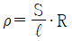
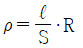
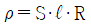
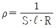
(정답률: 알수없음)
56. 고주파 전력을 측정하는 방법 중 콘덴서를 사용하여 부하전력의 전압 및 전류에 비례하는 양을 구하고, 열전쌍의 제곱 특성을 이용하여 부하 전력에 비례하는 직류 전류를 가동 코일형 계기로 측정하도록 한 전력계는?
- C-C형 전력계
- C-M형 전력계
- 볼로미터 전력계
- 의사 부하법
(정답률: 알수없음)
57. 다음 측정법 중에서 감도가 높고, 정밀측정에 적합한 측정법은?
- 직편법
- 영위법
- 편위법
- 반경법
(정답률: 알수없음)
58. 거리측정 장치 기능 점검시 지시기에 나타나는 반응순서를 바르게 나타낸 것은?
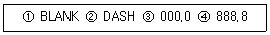
- ① → ② → ③
- ② → ③ → ④
- ③ → ④ → ①
- ④ → ① → ②
(정답률: 알수없음)
59. 최종 진입 상태에 있는 항공기의 코스 및 강하로에서 벗어남, 그리고 접지점으로 부터의 거리측정을 위한 레이더는?
- 정밀 진입 레이더(PAR)
- 2차 감시 레이더(SSR)
- 도플러 레이더(Doppler radar)
- 기상 레이더(Weather radar)
(정답률: 알수없음)
60. 분류기 없이 상당히 큰 전류까지 측정할 수 있고, 취급이 용이하지만 감도가 높은 것은 제작하기 어려운 계기는?
- 가동 코일형 전류계
- 전류력계형 전류계
- 가동 철편형 전류계
- 유도형 전류계
(정답률: 알수없음)